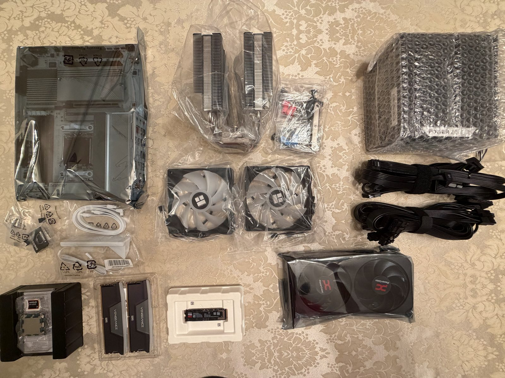
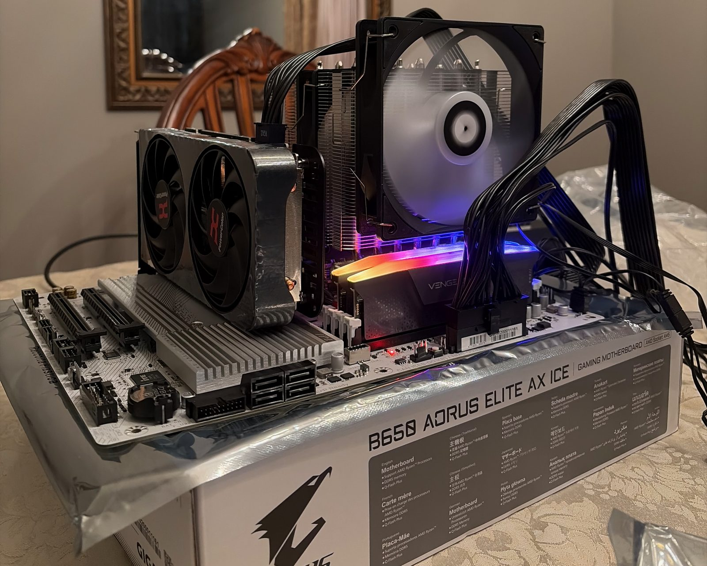

![[Describe what the image shows]](assets/images/project-1.jpg)
Featured
[Project name]
[What it is, what you built, and one concrete result. A number beats an adjective: "runs at 100 MHz on an Artix-7" says more than "fast".]

Computer Engineering student at 
I [design / build / study] [what you work on], from [one end] to [the other]. Currently focused on [area], and looking for [internships / roles] in [field].
[What it is, what you built, and one concrete result. A number beats an adjective: "runs at 100 MHz on an Artix-7" says more than "fast".]
![[Describe what the image shows]](assets/images/project-2.jpg)
[One or two sentences with a concrete result.]
![[Describe what the image shows]](assets/images/project-3.jpg)
[One or two sentences with a concrete result.]
Got into a computers because I grew up a gamer, stayed with computers because I am a problem solver.
I'm currently a part of a Co-Op program (at UIUC) under Raytheon's Systems Engineering team. I've also previously taken part in software research and engineering and hardware projects.


rtalu [at] illinois [dot] edu
Contact Me